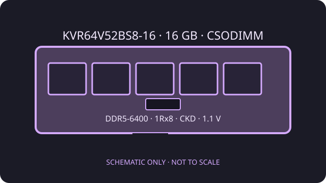

[ KINGSTON VALUERAM // CLOCKED DDR5 MEMORY ]
Kingston ValueRAM KVR64V52BS8-16
A 16 GB clocked DDR5 small-outline module (CSODIMM), not an ordinary unclocked SO-DIMM. Its integrated clock driver requires explicit host support.

Model specifications
| Exact part / capacity | Kingston ValueRAM KVR64V52BS8-16; 16 GB |
|---|---|
| Form factor / rank | 262-pin clocked SO-DIMM (CSODIMM); single rank, 1Rx8; includes a clock driver (CKD) |
| Speed / profile | DDR5-6400 (PC5-6400), JEDEC timing 52-52-52 (CL52). SPD is programmed for this JEDEC profile; no XMP or EXPO profile is specified. |
| Voltage | 1.1 V operating module voltage |
| ECC / buffering | Non-ECC, unbuffered client CSODIMM with clock driver. DDR5 on-die ECC is present in the memory devices; it is not system-level ECC. |
Compatibility guidance
- Do not assume compatibility with a standard unclocked SO-DIMM socket: the host must explicitly support the 262-pin DDR5 CSODIMM and its clock driver (CKD).
- Confirm the laptop or compact system supports 16 GB, a 1Rx8 organization, CSODIMM signaling, and DDR5-6400 operation. A platform with lower speed support may train slower only if its firmware supports this module class.
- The module uses its JEDEC DDR5-6400 profile; no XMP/EXPO profile is specified. The clock driver does not make it a registered ECC DIMM.
- Use the host manufacturer's qualified memory list and service manual before installation. Check for a CSODIMM-specific slot designation and follow ESD and power-isolation procedures.
Manufacturer sources
- Kingston — KVR64V52BS8-16 datasheetExact CSODIMM form, CKD, capacity, rank, JEDEC timing, and voltage.
- Kingston — official product search for KVR64V52BS8-16Manufacturer product and memory compatibility lookup.